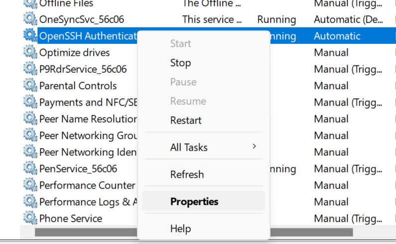
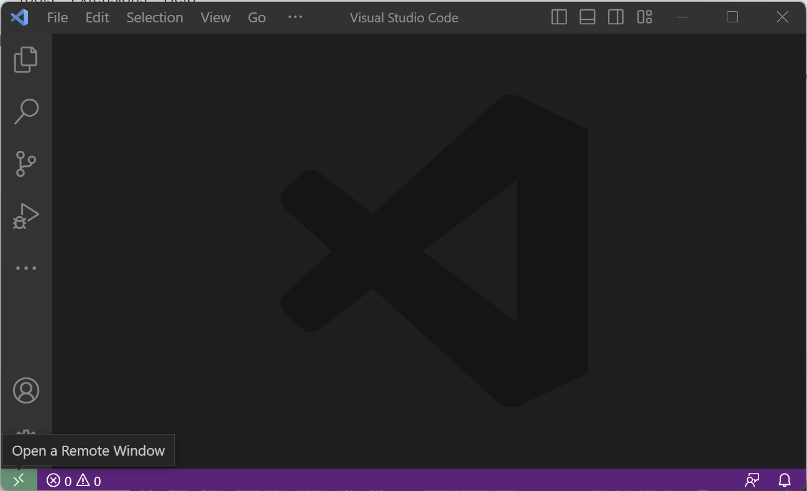
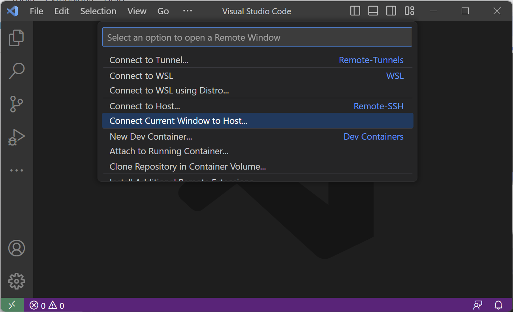
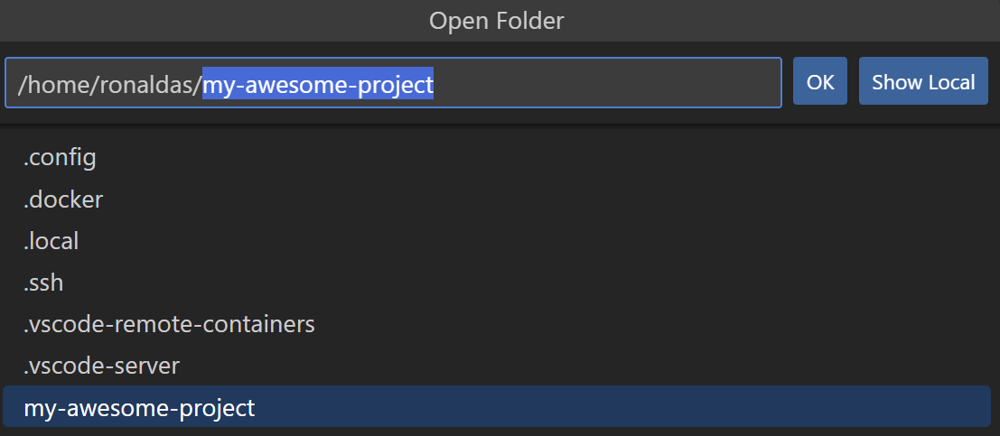

Welcome Alta beta testers! This tutorial will run you through how to generate SSH keys, connect to Alta, and setup the development container environment.
If you run into any issues during this tutorial, please ask for help in the PSTAT Research Computing Users Google Group!
Prereqs
- VS Code text editor
Windows
- Press Start and search for "Windows Powershell". Click on it to open a new shell.
- Next, run the following code to create a directory called
.ssh. Replace<your username>with the username your computer uses.
new-item C:\Users\<your username>\.ssh -ItemType Directory
- In the terminal either type or copy-paste the following command:
ssh-keygen -t ed25519 -f $HOME\.ssh\ed25519 -N ""
The command above will generate 2 files in the directory C:\Users\<your username>\.ssh\: ed25519 (private key) and ed25519.pub (public key).
- Verify that ssh-agent is running by searching for "Services" in the Start Menu:

- Search for "OpenSSH Agent" and make sure that the Status is "Running" and Startup Type is "Automatic".

- If this is not the case, right-click on the "OpenSSH Authentication Agent" entry -> select "Properties" -> Under "Service Status" select "Start" -> From the "Startup Type" drop down menu, select "Automatic".


- Lastly, verify that your private key is added to your ssh-agent keyring by typing the following command in terminal where
<KEY_NAME>is the name of the key you created earlier:
ssh-add $HOME/.ssh/ed25519
macOS/Linux
- Find your terminal application and open up a new shell:
- macOS: cmd + space, then search "terminal"
- Ubuntu: ctrl + alt + t
- In the terminal either type or copy-paste the following command:
ssh-keygen -t ed25519 -f ~/.ssh/ed25519 -N ""
The command above will generate 2 files in the directory ~/.ssh/: ed25519 (private key) and ed25519.pub (public key).
- Verify that your ssh-agent is running by using the following command:
eval "$(ssh-agent -s)"
- Lastly, verify that your private key is added to your ssh-agent keyring by typing the following command in terminal where
ed25519is the name of the private key you created earlier:
ssh-add ~/.ssh/ed25519
Now that you have your public and private keys, complete the following user sign-up form. In the last step where you're asked to input your public key, do the following (this step uses your installation of VS Code):
- Go back to your terminal and use the following command:
Windows:
code $HOME\.ssh\ed25519.pub
macOS/Linux:
code ~/.ssh/ed25519.pub
- This will launch a VS Code window containing your public key. Copy and Paste the key into the last step of the Alta user sign-up form.
Before we connect to Alta, we need to install some necessary extensions on VS Code to enable features for dev container and remote development management. You will need the following extensions:
- Remote Development Pack - SSH + Dev Containers
- Jupyter - Notebook support
- Python - Intellisense, linting, debugging
You can install these by following the links and clicking "Install" on your browser or you can look them up on VS Code Extension search (using ctrl/⌘ + shift + x shortcut).
To run your code remotely you will first need to connect to a remote server such as Alta. For more information about available computing servers, checkout this wiki entry.
With our VS Code extensions, remote connections are made simple:
- Click on the bottom right button to "Open a Remote Window". This will launch the VS Code command palette for remote connections:

- Select "Connect Current Window to Host..." option.

- From here select the host you wish to connect to. If the remote host that you want to connect to does not appear in the options, use the "Add New SSH Host..." option. Type the following command where you replace
<NetID>with your own NetID:
ssh <NetID>@alta.pstat.ucsb.edu

- You will be prompted to save the configuration. Make sure to select either
C:\Users\<your_username>\.ssh\config(Windows) or~/.ssh/config(MacOS/Linux). - From here, VS Code will automatically connect to the host for you. If this is your first time connecting to any remote server, it may take a few seconds for VS Code to install configurations in the background. You may also be prompted about the type of operating system your server uses, for Alta select "Linux". Once the setup is complete you will be greeted with a similar window:

Now that you are connected to Alta, we can set up the development container!
- In your terminal, run the following code where you should replace
<project-name>with the name of your project/directory you wish to create:
copier copy gh:UCSB-PSTAT/devcontainer-template <project-name>
- Answer the questions by selecting from the options provided. An example can be seen below:
What is your project names?
my-awesome-project
What language(s) will you use in this project?
R and Python
Do you want to install Visual Studio Code extensions for Jupyter notebooks, R and Python?
Yes
Install Jupyter Lab? Jupyter Lab is optional if using VS Code and Python extensions for development.
No
Install Rstudio? Rstudio is optional if using VS Code and R extensions for development.
No
Install Quarto? Quarto is optional publishing system compatible with R and Python.
No
Do you want to include example files?
Yes
Copying from template version 1.0.0
create .
create example.Rmd
create .devcontainer
create .devcontainer/Dockerfile
create .devcontainer/devcontainer.json
- Run the command below to view your new project folder:
tree -a starter-code
my-project/ ├── .devcontainer │ ├── devcontainer.json │ └── Dockerfile └── example.Rmd
- You now have a new directory in which you can open up a development container! To do so, click on "Open Folder" in the left menu and navigate to your project folder's name:


- Click OK. This will open up your project's folder (in the example, it will open "my-research-project".

- From here, you can click to "Reopen in Container" or click on the bottom left green button and select "Reopen in Container":

- Your container will be built. It may take a few minutes so be patient!
To get more familiar with how your container works consider the following sets of tutorials: